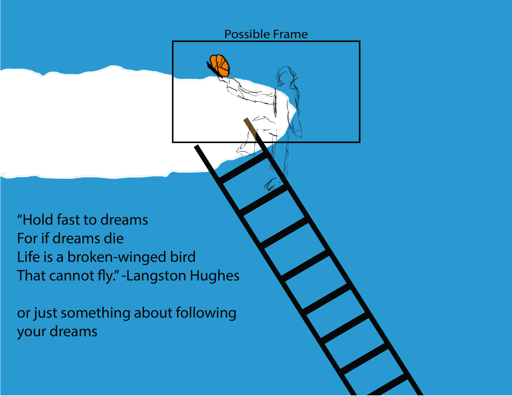

In this project, we were assigned the task of creating a screenprint on a piece of fabric about something that we wanted to share with others. For my project, I decided to create a piece that would inspire people to chase their dreams.
To start off my project, I had to create a first draft in Adobe Photoshop of what I wanted my screenprint to be about. I decided to have me reaching up into the skies.
